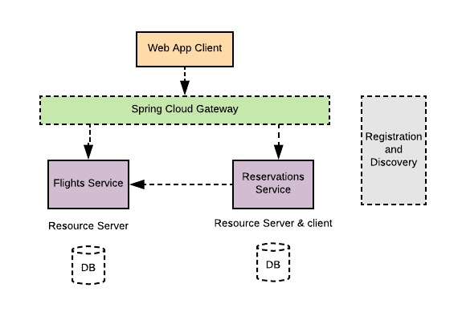

Spring framework provides a comprehensive and extensible authentication and authorization support. Latest enhancements in Spring 5.x have made it simple to apply security standards such as OAuth2 to secure applications. In this blog I will demonstrate leveraging second-generation of OAuth2 support in Springframework security in a distributed and reactive-based microservices application.
Architecture
A Spring-based simulation of a flight reservation web application is created for this blog to illustrate applying the latest Springframework 5.x security features to secure a distributed microservices application. The architecture of the demonstrating application consists of a front-end web application and a couple of backend microservices. All modules of the application are implemented using Spring Boot to take advantage of the auto-configuration features to setup the application. All Services in the application are implemented with reactive WebFlux support provided by Springframework.
As illustrated in the diagram below, the system consists of:
-
Front-end Web application implemented using Thymeleaf. The application allows a user to search for a flight from an origin to a destination within certain dates, select and book the itinerary. The module is named as agency-web.
- A back-end service to retrieve available itinerary flights, named as flights-service.
- A back-end service to perform reservations and book the itinerary, named as reservations-service.
Additionally, the application uses common Spring Cloud services such as:
- A registration and discovery service using Spring Cloud Eureka implementation to help services to register and discover each other.
- A Spring Cloud Gateway in front of the flights and reservations backend services.

Running the Application
Follow the steps below to run the application:
- clone the application from github
$ git clone https://github.com/Haybu/RA-OAuth2-Gen2.git
- Build the application from the project home directory
$ mvn clean install
- Launch the UAA authorization server.
$ ./uaa-server/gradlew -b ./uaa-server/build.gradle uaa
- Bring up all services by running the shell script startup.sh
$ ./startup.sh
Application Flow
After bringing all modules up, access the web application at http://localhost:8080. You will be redirected to the OAuth2 authorization server (UAA) to authenticate and authorize to the application. Once successfully logged in, search for a trip itinerary by entering: origin as AUS, destination as IAH, departure date as 5/5/2018 and return date as 5/22/2018.
The application will display a list of flights, select an outbound flight, an inbound flight, review select seletected flights and click on “book” button. The application will display a reservation confirmation number for each flight.
As illustrated in the sequence diagram below, the client application utilizes a backend “flights service” to search for available flights per a user search request. Additionally, a “reservations” backend service is also helping a client to book the selected flights. The client application and both backend services are implemented using Spring Boot. They all leverage Spring Cloud Eureka for services registrations and discoveries. The front-end client application talks to the backend services via a Spring Cloud Gateway.
Services Registration and discovery
Client application, the two backend API services and the gateway application
all register themselves automatically with a Spring Cloud Eureka server when they
spin up. The client application uses a “WebClient” bean to interact with any of the backend
services. The “WebClient” beans are configured with a “LoadBalancerExchangeFilterFunction”
filter to help with balancing out between the discovered target services’ instances.
For example, a client application defines a load-balanced “WebClient” bean as listed below and uses that to interact with underneath discovered gateway from a Eureka service.
@Bean
WebClient webClient(LoadBalancerExchangeFilterFunction eff,
ReactiveClientRegistrationRepository repo1,
ServerOAuth2AuthorizedClientRepository repo2)
{
ServerOAuth2AuthorizedClientExchangeFilterFunction oauth2 =
new ServerOAuth2AuthorizedClientExchangeFilterFunction(repo1, repo2);
return WebClient.builder().filter(eff).filter(oauth2).build();
}
Spring Cloud Gateway
The web client application communicates with the two backend micorservices via a Spring Cloud Gateway. The Gateway is configured to route based on the target’s path to each proxied backend service. And As shown below, a “RewritePath” filter is defined to observe the context path to each target service.
spring:
cloud:
gateway:
routes:
- id: flights_service_route
uri: lb://flights-service
predicates:
- Path=/api/flights/**
filters:
- RewritePath= /api/flights/(?<segment>.*),/flights/$\{segment}
- id: reservations_service_route
uri: lb://reservations-service
predicates:
- Path=/api/reservations/**
filters:
- RewritePath= /api/reservations/(?<segment>.*),/reservations/$\{segment}
Security
In this architecture we need to apply Spring security to the client application and the two backend microservices. New security enhancement in spring 5.x paves the way to seamlessly secure applications using OAuth2 standards.
1. Web Application - OAuth2 Client
You can take advantage of auto-configuring clients with Spring Security if you have “spring-security-oauth2-client” dependency in your classpath. It is even getting simpler to register as many clients as you desire using properties with “spring.security.oauth2.client” prefix, and define your provider’s properties with “spring.security.oauth2.provider” prefix.
For instance, in this sample, after the web client application is registered with one of the OAuth2 / OpenID Connect providers (like UAA), you can configure the web application with properties to register a client using the a client-id and client-secret. Also you can define the selected client’s provider with information such as the authorization URI, token URI, user-info URI and JWK set URI. With those providers who support OpenID Connect discovery, the configuration could be further simplified by specifying the issuer URI (with “spring.security.oauth2.client.provider. oidc-provider.issuer-uri” prefix).
The configuration listing above shows an example of properties used to register a client and a provider.
spring:
security:
oauth2:
client:
registration:
login-client:
client-id: login-client
client-secret: secret
client-authentication-method: basic
scope: openid,profile,email
authorization-grant-type: authorization_code
client-name: Login Client
redirect-uri-template: "{baseUrl}/login/oauth2/code/{registrationId}"
provider: uaa
provider:
uaa:
authorization-uri: http://localhost:8099/uaa/oauth/authorize
token-uri: http://localhost:8099/uaa/oauth/token
user-info-uri: http://localhost:8099/uaa/userinfo
user-name-attribute: sub
jwk-set-uri: http://localhost:8099/uaa/token_keys
2. Reservations Service and Flights Service as Resource Servers
You can designate and configure a resource server in Spring Security 5.x by having “spring-security-oauth2-resource-server” in your classpath. Spring Boot can set up an OAuth2 Resource Server as long as JWK Set URI or OIDC Issuer URI is specified.
For example, the flight service acts as a resource server and is configured using the properties below. With this setup the client application can communicate securely with the backend flights service.
spring:
security:
oauth2:
resourceserver:
jwt:
jwk-set-uri: http://localhost:8099/uaa/token_keys
4. Spring Cloud Gateway
The Spring Cloud Gateway in this architecture acts as an API gateway service to the frontend web application. It routes traffic to targeted backend microservices. Spring Cloud Gateway passes through the Authentication token it receives from the client application as an “Authorization” Bearer header.
Conclusion
The Spring security team at Pivotal made significant improvements to secure client and resource server applications with Spring Security 5.x. One can easily secure applications using OAuth2 standards with so minimum fuss. You can get it all configured by specifying the appropriate security dependencies and configuration properties to configure a client, resource server or optionally a provider.
Resources
- Sample Demo application Code in Github
- Spring Security Documentation